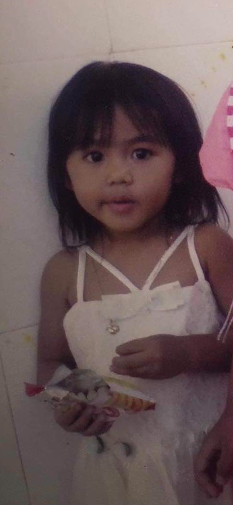
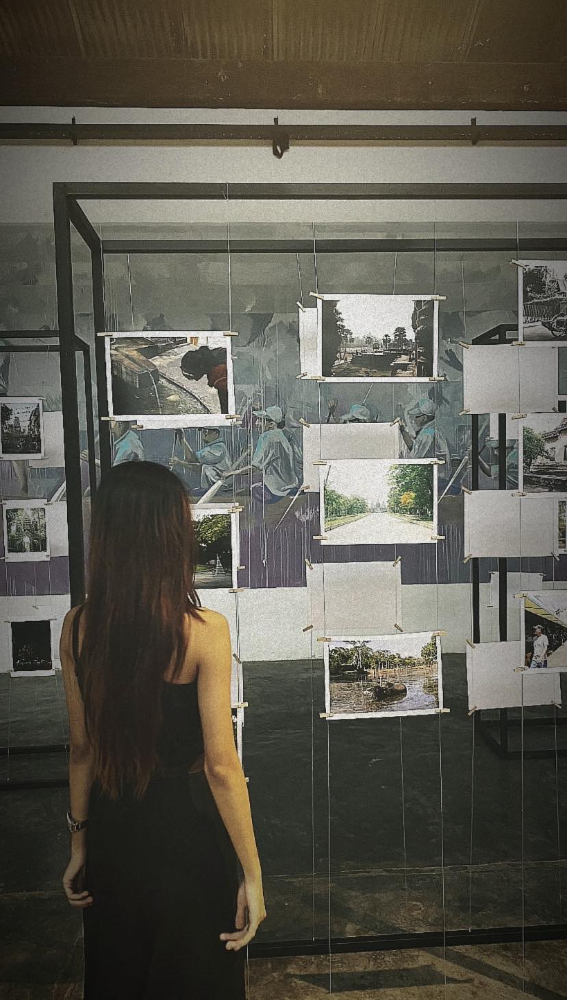

Kid Photo

This is me when I was a kid. I ate a lot and was not skinny at all.
People mostly said that my father and I looked alike, while my sister resembled my mother.
I was a bit naughty but easy-going — I loved fooling around.
If you’ve known me since I was a kid, I swear, we're probably still best friends today.
Teenage Photo

This was me in grade 7. I used to study at Beltei International School Campus 7,
but transferred to Bak Touk High School in grade 10.
Throughout my teenage life, even though it wasn’t as complex as university, I learned a lot.
I joined many competitions. My first MBTI was ENTJ — but time flies.
Now I’m INTJ because I don’t talk as much as I used to.
As long as you're good to me, we’ll always be friends.
Adult Photo

Becoming an adult felt less like a moment and more like a slow realization.
It’s totally different from childhood and teenage years — it quietly became the peaceful part of my life.
Wake up, go to work or study, come back home — and repeat.
Nothing new, just recycling days. That’s when I realized: I’ve become an adult.